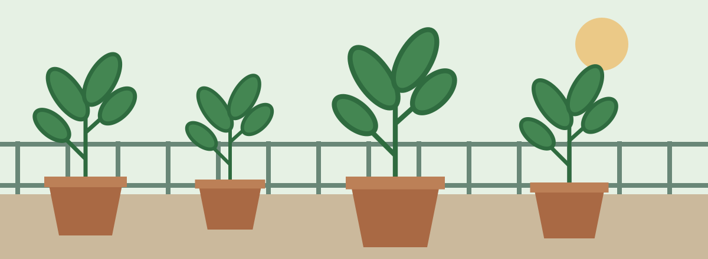

A little space. A fresh start.
Make room for something green.
Welcome to Green Balcony, your starting point for growing herbs, vegetables and flowers in containers. Explore simple ideas for balconies, patios, porches and sunny windowsills.
Start GrowingFind your first garden
Beginner’s Tip of the Week
Start small and grow from there.
A few containers are enough to begin. Before choosing plants, spend a day noticing where sunlight reaches your space. Use that observation to plan your first little garden.